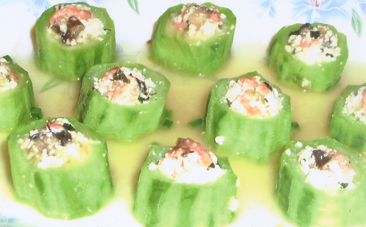
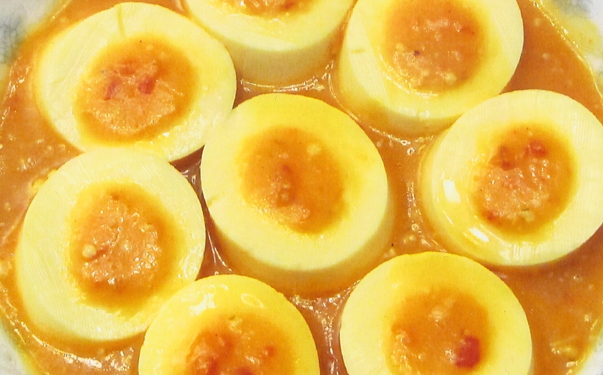

Tofu Cookbook in Progress
Overview of Authentic Tofu

Angela Chang’s book in progress, Authentic Tofu, will be a photo-rich, user-friendly guide designed to entertain as well as inform. With both narrative and explanatory approaches, Chang will lay out all the novice needs to know about mastering the techniques of tofu preparation.
Authentic Tofu will at the same time reveal a wealth of “insider” tofu knowledge not found in any existing tofu cookbook. 
In lively anecdotes, readers will learn the history of soy foods, from tofu’s origin in China two thousand years ago through its evolution from simple peasant food to the nobility’s favorite and most sophisticated cuisine. They will see how it became material to Chinese culture, and even language, as a comfort food that could be enjoyed by all. Little-known stories of tofu’s introduction to the West, such as their early production in France, will be of significant interest to tofu-lovers.
Chang’s invaluable tips make the preparation of delicious tofu dishes virtually foolproof. With clear, simple instructions she provides a thorough understanding of the advantages as well as proper use of the many varieties of tofu now widely available in the West, and thus invites exploration among them. She reveals secret ingredients and innovative shortcuts that allow chefs in any setting, from formal to familiar, to turn out delectable and visually appealing meals. Authentic Tofu will include simplified classic Chinese recipes as well as creative “fusion” dishes using American ingredients and techniques.
Some Distinctive Features of Authentic Tofu:
An overwhelming majority of American tofu cookbooks is written strictly for vegetarians. Authentic Tofu, however, is not just for vegetarians, but for meat and seafood eaters as well. In fact, most native tofu users think that tofu tastes best when paired with seafood.
One of the most commonly perceived problems about tofu-how to remove excess water with minimum time and effort-is easily solved in this book. The simple and foolproof method I propose will put the cumbersome methods of other books to shame.
Sampling expertly made tofu dishes in good restaurants can be a great learning experience for beginners. It often inspires diners to experiment with new recipes, different ingredients and creative presentations. Authentic Tofu will provide useful suggestions for choosing tasty dishes and restaurants to explore.